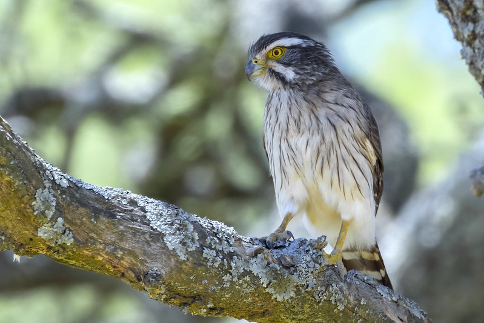
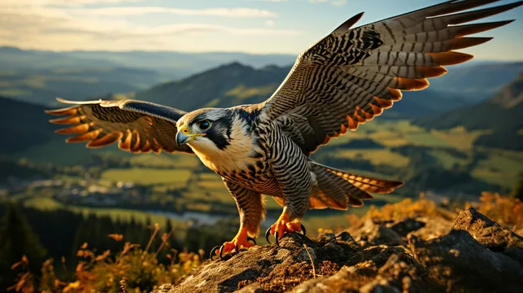

Speed
Falcons are known for incredible flight speed and strong control.
Falcons are fast, focused, and fearless. They fly with power, control, and calm confidence. Their sharp vision and quick decisions make them one of the strongest birds in the sky.
Explore this mini-site to learn why falcons inspire strength and courage.
Falcons combine speed with intelligence, and power with precision.
They do not waste energy. They move with purpose.
This is why many people see falcons as symbols of confidence.
Many falcons can dive at extreme speed, especially during hunting.
They use pointed wings and a streamlined body to reduce air resistance.
Falcons rely on discipline: short bursts of energy, then precise control.
Falcons live on mountains, cliffs, coasts, grasslands, and even cities.
Urban falcons often nest on tall buildings that feel like rocky cliffs.
Their adaptability is one more reason they are seen as resilient birds.
Compared to eagles, falcons are usually smaller but faster in attack dives.
Compared to many hawks, falcons use more aerodynamic wing shapes for speed.
Eagles often win in raw power, while falcons dominate in precision and timing.
Falcons are birds of prey in the falcon family. In nature they sit near the top of the food web.
The word "falcon" is often used for several related species, not one single type.
A falcon's eyesight is among the best in the animal world for spotting movement from a distance.
Falcons are strong fliers, but their strength is not only speed. It is also timing, choosing a line of attack, and reading wind and light.
Hunting is rarely random. Falcons scan the landscape, then commit to a strike with focus and control.
Falcons often nest on high places: cliffs, rock edges, and sometimes on buildings that resemble cliffs.
A female usually lays a small clutch of eggs. Parents take turns protecting the nest and bringing food.
As chicks grow, they exercise their wings, turning from downy nestlings into confident fliers.
Falcons help control numbers of small birds and rodents, which can affect the balance of an area when prey species become too many.
When people protect falcon habitats, they also help clean air, open space, and many other wild animals.
How fast can a falcon fly?
In normal flight, many falcons are very fast, and in a hunting dive some species can exceed 300 km/h.
Do falcons live only in wild mountains?
No. Falcons can adapt to cities, cliffs, open fields, and coastlines if food and nesting space are available.
Why do people call falcons confident birds?
Their behavior is controlled and purposeful. Falcons often wait for the exact right moment before acting.
What do falcons eat?
Falcons mainly eat other birds, but they also hunt small mammals, lizards, and large insects depending on habitat and species.
How do young falcons learn to hunt?
Chicks are fed in the nest, then they practice flapping, short flights, and controlled pursuits while parents show prey behavior.
Are all falcon species the same?
No. There are many falcon species around the world. They differ in size, preferred habitat, and hunting style.

Falcons are known for incredible flight speed and strong control.

Their sharp eyes help them react quickly and accurately.